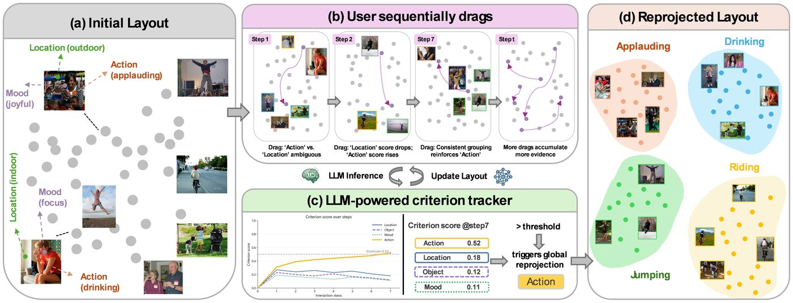

Yang Liu
Ph.D. student, Department of Computer Science, Virginia Tech

I work on LLM agents and human–AI interactive systems, advised by Prof. Chris North: how agents reconcile conflicting knowledge in memory, how language models can ground human intent expressed through spatial interaction, and how to benchmark retrieval-augmented LLMs.
Recent research
2025–2026-
No. 1
Conflict-Aware Agent Memory
A training-free sensemaking layer for LLM agent memory that resolves conflicting facts. It organizes memories into provenance-aware claim graphs and applies a gated resolution ladder (temporal recency, source reliability, LLM-judge audit) so the agent answers from a consistent view of what it knows. Evaluated on fact-consolidation, conflicting-document, and temporal-knowledge benchmarks across multiple open and commercial backbones.
Paper under review.
-
No. 2
CriterionSI
Drag, Infer, Reproject: Grounding LLMs through Spatial Interaction for Image Clustering

Users' clustering criterion (e.g., action, location, mood) often emerges gradually through interaction rather than being clear at the outset. CriterionSI (Criterion-guided Semantic Interaction) uses an LLM to infer and refine the user's clustering criterion from sequential drag interactions, grounds it in human feedback rather than fixed priors, and combines the inferred criterion with local drags to guide global reprojection of the image layout. Simulation-based evaluation and a usage scenario show it discovers the target criterion from a small number of interactions and progressively produces criterion-aligned clustering layouts.
-
No. 3
Summary Verification Space
Spatial Visual Analytics for Multi-Document Summary Verification
LLMs increasingly summarize collections of documents, but checking whether each summary statement is grounded in the sources is hard when evidence is scattered, incomplete, or conflicting. SVS is a visual analytics system for verifying multi-document summaries through spatial document organization and coordinated provenance visualization, investigating summary-guided and source-guided 2-D canvas layouts for scalable verification.
-
No. 4
CTIConnect
A Benchmark for Retrieval-Augmented LLMs over Heterogeneous Cyber Threat Intelligence
A benchmark for evaluating retrieval-augmented LLMs across the cyber threat intelligence task landscape: 1,860 expert-verified QA pairs over nine tasks, built on a unified environment that integrates five heterogeneous CTI sources (CVE, CWE, CAPEC, MITRE ATT&CK, and unstructured threat reports). Experiments on ten state-of-the-art LLMs show that the retrieval bottleneck shifts by task and that domain-specific retrieval strategies outperform generic retrieve-then-rerank and IRCoT.
{kind=link}
Earlier work (2022–2024) is listed under Projects; the full list of papers is under Publications.